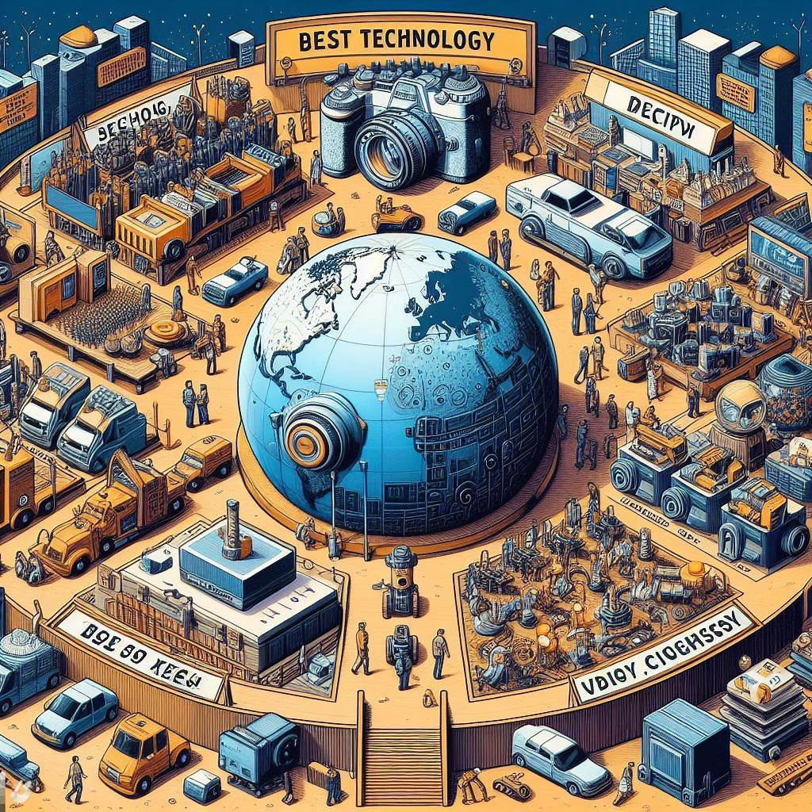

About Blog

Jan 09, 2024 | 3 comments
Tech blogs are one of the best ways to stay updated with the latest technologies. This is the topic sentence, which introduces the main idea of the paragraph. But every blog offers a unique perspective on the subject. This is a supporting sentence, which adds more information or detail to the topic. Knowing the best tech blogs means always getting the whole story.
In this article, you will find an overview of the best tech blogs in 2024, organized by topic; tech blogs focused on general trends, tech blogs focused on the metaverse, virtual reality, and augmented reality.
CONTINUE READING
What’s the Underlying Importance of Technology?
Technology is crucial for many reasons. It connects the vital aspects of life. It helps people achieve more in their work and personal lives by facilitating better information exchange through IT.
CONTINUE READING
Nov 11, 2023 | 3 comments
Why Keep Up With Latest Trends Using the Best Tech Blogs
Leaders always have a vision for the future. They can achieve this vision by following the newest developments in technology through tech blogs. Knowing what technology is coming next helps them prepare for it. It also boosts their trustworthiness and dependability.
CONTINUE READING
Nov 13, 2023 | 3 comments
The 7 Best Tech Blogs That Look Into General Trends
Technology is easily separated into several subcategories. But it’s also essential to keep an eye on the border picture. More generalized tech blogs take a larger-scale view of the industry. And the following selections are the best tech blogs in 2024 with that generalized industry view.
The Verge
Wired
Venturebeat
CNET
Gizmodo
Digital Trends
Mashable
CLICK TO READ IT

Jan 03, 2024 | 3 comment